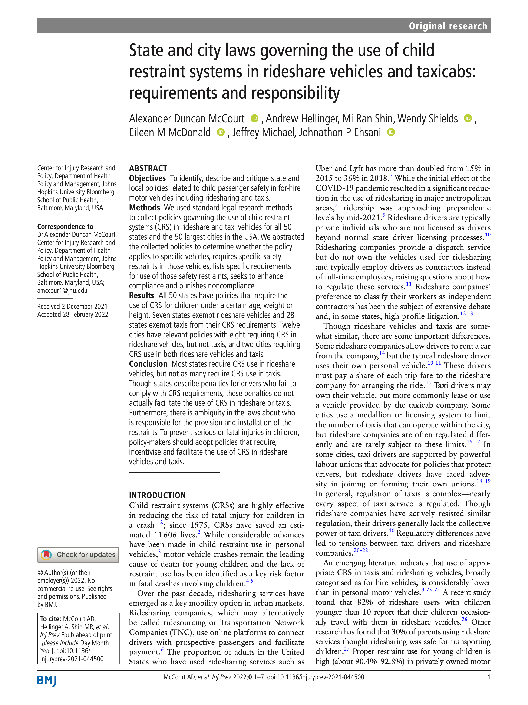
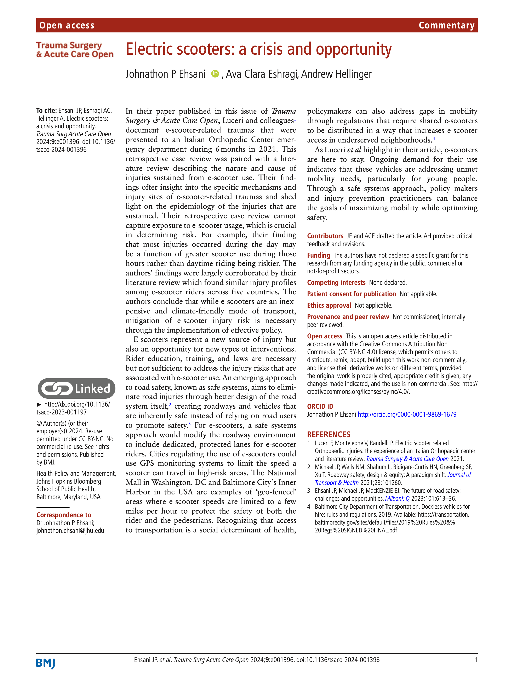

E-scooters are transforming urban environments by improving mobility for those without access to a motor vehicle or in areas underserved by transit. Shared e-scooters are not often distributed equitably throughout cities, so state and local policies that govern their distribution could be a viable public health intervention that helps create a more equitable transportation system. Baltimore City, Maryland, USA requires shared e-scooter vendors to deploy e-scooters to predefined equity zones at the beginning of each day. This study reports on the equity zone policies established by Baltimore City, shared e-scooter use in these equity zones, and suggestions for improvement from shared e-scooter users.
We worked with two shared e-scooter vendors to survey e-scooter users who began their ride in one of the equity zones defined by Baltimore City. The survey included questions about the frequency and purpose of their shared e-scooter use, the availability of alternate transportation options, and how likely proposed changes to e-scooters and the road environment would increase their use of shared e-scooters.
Valid survey responses were obtained from 98 individuals. Most respondents reported using shared e-scooters at least a few times a week, and over half of all respondents reported travelling for work or school on their e-scooter trip. Most participants agreed that shared e-scooters make it possible to get to places they otherwise couldn't go and easier to get to places they need to go. When asked what changes would increase their shared e-scooter ridership, respondents favored making shared e-scooter rentals less expensive, adding dedicated e-scooter/bicycle lanes, allowing riders to carry things more easily on e-scooters, and increasing shared e-scooter availability. Our findings suggest that e-scooters are being utilized in equity zones, helping facilitate travel and access to work and school destinations. Similar policy approaches can help improve transportation equity.
view full work
The learner stage of graduated driver licensing, when teenagers are supervised by an
adult driver, represents an opportunity to develop skills that could confer a safety benefit during their
years of independent driving. This paper describes the design of a teenage driving study which aims to
evaluate the impact of a smartphone application, the ‘DrivingApp,’ to increase the quantity and improve the
quality of supervised practice driving.
view full work
The purpose of this article is to identify, describe, and critique state and local policies related to child passenger safety in for-hire motor
vehicles including ridesharing and taxis. We used standard legal research methods to collect policies governing the use of child restraint systems (CRS) in
rideshare and taxi vehicles for all 50 states and the 50 largest cities in the U.S. We abstracted the collected policies to determine whether the policy applies
to specific vehicles, requires specific safety restraints in those vehicles, lists specific requirements for use of those safety restraints, seeks to enhance
compliance, and punishes noncompliance.
All 50 states have policies that require the use of CRS for children under a certain age, weight, or height. Seven states exempt rideshare vehicles and 29 states
exempt taxis from their CRS requirements. Twelve cities have relevant policies with eight requiring CRS in rideshare vehicles, but not taxis, and two cities requiring
CRS use in both rideshare vehicles and taxis. Most states require CRS use in rideshare vehicles, but not as many require CRS use in taxis. Though states describe penalties
for drivers who fail to comply with CRS requirements, these penalties do not actually facilitate the use of CRS in rideshare or taxis. Furthermore, there is ambiguity
in the laws about who is responsible for the provision and installation of the restraints. To prevent serious or fatal injuries in children, policy makers should adopt
policies that require, incentivize, and facilitate the use of CRS in rideshare vehicles and taxis.

view full work
This article reviews existing state laws related to autonomous vehicle safety, equity,
and automobile insurance. Thirty states were identified with relevant legislation. Of these, most states had
one or two relevant laws in place. Many of these laws were related to safety and insurance requirements. Data
are needed to evaluate the effectiveness of these laws in order to guide further policy development.
view full work
Supervised practice during the learner stage of graduated driver licensing is required in all U.S. states and some international jurisdictions. Several U.S. states require driving hours to be recorded in a paper logbook, making it susceptible to errors or falsification. A smartphone app that operates as an electronic logbook could serve as an alternative. The purpose of this study was to measure the impact of the logbook format (i.e., paper versus electronic) on self-reported driving behavior.
There were no statistically significant differences in any measures of self-reported practice driving by logbook type (electronic versus paper). Agreement between self-reported and electronic logbook‒recorded trips ranged between 68.6% and 79.0% (allowing a difference of 2 trips per week). User satisfaction with the electronic logbook was high, with 93.0% of teenagers and 91.9% of parents stating that they would recommend the app to a friend. An electronic logbook is a viable approach to measuring practice driving. Eventually, it could become part of a system where practice requirements are verified, allowing states to move toward performance-based graduated driver licensing.
view full work
Child restraint systems (CRS) requirements for children in rideshare vehicles vary by state and city. In 43 states,
child passengers in rideshare vehicles are required to be secured in appropriate CRS. However, 28 states exempt taxis from the CRS
requirement. Of the 12 cities with relevant policies, eight (67%) require CRS in rideshare vehicles, but not taxis; two cities (17%)
require CRS use in both rideshare vehicles and taxis.
BTSCRP Research Report 6: Identifying and Prioritizing Behavioral Interventions to Improve Child Passenger Safety in For-Hire Vehicles,
from TRB's Behavioral Traffic Safety Cooperative Research Program, provides, in Part I, guidelines for improving child passenger safety in
rideshare and taxi vehicles. The guide covers steps to ensure CRS requirements are complete and consistent, strategies for communicating with
for-hire companies, and suggestions for legislative provisions. Part II discusses the goals and methods employed for this project's research.
view full work
Teenagers in the United States are at the highest risk of crash during the first year of independent driving. Graduated driver
licensing (GDL) policies, vehicle choice, and safety technologies all have an impact on teenager safety, yet more needs to be
understood about parent and teenager attitudes and beliefs that affect the choices and decisions surrounding these issues.
We conducted six focus groups with teenagers enrolled in a driver education program and their parents. A qualitative thematic
analysis was undertaken of the responses of these individuals directly experiencing GDL policies and selecting vehicles
for the teenagers to drive. We found parents believed there was a high likelihood teenage drivers would crash and were concerned
about the associated financial costs. Parents preferred visual cues for determining vehicle safety and had concerns for
the impact of safety technologies on teenager driving skills.
Teenagers and parents felt that logging 60 hours was a measure of the
character of a driver rather than an opportunity for mastering driving skills. There was a debate balancing the intrusiveness
with the convenience of recording driving through smartphone applications. Teenagers wanted to learn to drive for independence,
but parents did not observe actions related to these desires. Attitudes and beliefs about which vehicles were safest
were heavily influenced by personal experiences and perceptions, rather than quantitative evidence, with examples of availability-,
substitution-, and outcome cognitive biases. By understanding the influence of cognitive biases on driving safety decisions,
community-based educational outreach programs could more effectively improve teenager driver safety.
view full work
Motor vehicle crashes (MVCs) are the leading cause of work-related deaths
in the United States. The increasing popularity of the competitive rideshare market and
the lack of oversight over workforce health and safety limits understanding of the current
occupational hazards and associated risk factors faced by this precarious workforce.
The objective of this analysis was to determine what the personal, social and occupational
risk factors for work-related crashes in rideshare drivers are in the United States and
suggest further research required to understand occupational health risks and opportunities
for interventions.
We conducted a survey of a convenience sample of rideshare and taxi drivers using an online
questionnaire. We examined the general characteristics of rideshare drivers by history of
work-related MVCs and logistic regression models were used to determine major predictors of
MVCs. Of 276 rideshare drivers that reported their crash history, one-third (n = 91, 33%)
reported being involved in a work-related crash. Results from a multivariable logistic
regression model showed rideshare MVCs were more likely in older drivers if drivers undertook
10 or more rideshare trips per day, frequently or very frequently were driving on unfamiliar
roads, and driving whilst tired. Precarious workers and health and safety is emerging as a
major area of research focus. There is a unique opportunity to explore the occupational health
risks in rideshare drivers to provide interventions that encourage growth of a healthy and
fit rideshare workforce and promote work practices and future regulations aimed at improving
safe work practices. This analysis paints a complex picture of personal and occupational
factors that are associated with MVCs in rideshare drivers suggesting that additional policy
development related to occupational health and safety of rideshare drivers could be constructive.
view full work
E-scooters represent a new source of injury but also an opportunity for new types of
interventions. Rider education, training, and laws are necessary but not sufficient to address the
injury risks that are associated with e-scooter use. An emerging approach to road safety, known as
safe systems, aims to eliminate road injuries through better design of the road system itself,
creating roadways and vehicles that are inherently safe instead of relying on road users to promote
safety. For e-scooters, a safe systems approach would modify the roadway environment to include dedicated,
protected lanes for e-scooter riders. Cities regulating the use of e-scooters could use GPS monitoring
systems to limit the speed a scooter can travel in high-risk areas. Recognizing that access to transportation
is a social determinant of health, policymakers can also address gaps in mobility through regulations that
require shared e-scooters to be distributed in a way that increases e-scooter access in underserved
neighborhoods.
E-scooters are here to stay. Ongoing demand for their use indicates that these vehicles are addressing
unmet mobility needs, particularly for young people. Through a safe systems approach, policy makers and
injury prevention practitioners can balance the goals of maximizing mobility while optimizing safety.

view full work
This study addresses the lack of methods to quantify driver familiarity with roadways, which poses a
higher risk of crashes. We present a new approach to assessing driving route diversity and familiarity using
data from the DrivingApp, a smartphone-based research tool that collects trip-level information, including driving
exposure and global positioning system (GPS) data, from young novice drivers (15–19 years old) to older drivers
(67–78 years old).
Using these data, we developed a GPS data-based algorithm to analyze the uniqueness of driving routes.
The algorithm creates same route trip (SRT) arrays by comparing each trip of an identified user, employing statistically
determined thresholds for GPS coordinate proximity and trip overlap. The optimal thresholds were established using a
General Linear Model (GLM) to examine distance, and repeated observations. The Adjusted Breadth-First Search method is
applied to the SRT arrays to prevent double counting or trip omission. The resulting list is classified as geographically
distinct routes, or unique routes (URs).
Manual comparison of algorithm output with geographical maps yielded an overall precision of 0.93 and accuracy of 0.91.
The algorithm produces two main outputs: a measure of driving diversity (number of URs) and a measure of route-based
familiarity derived from the Rescorla–Wagner model. To evaluate the utility of these measures, a Gaussian mixture model
clustering algorithm was used on the young novice driver dataset, revealing two distinct groups: the low-frequency driving
group with lower route familiarity when having higher route diversity, whereas the high-frequency driving group with the
opposite pattern. In the older driver group, there was a significant correlation found between the number of URs and
Geriatric Depression Score, or walking gait speed. These findings suggest that route diversity and familiarity could
complement existing measures to understand driving safety and how driving behavior is related to physical and
psychological outcomes.
view full work
Verification of the completion of supervised practice driving hours for teenagers is challenging.
Electronic logbooks could provide an objective alternative to paper logbooks. Factors influencing the adoption
of electronic logbooks are poorly understood. We conducted a survey of a nationally representative sample of
teenagers and parents in the USA to address these gaps in understanding.
The survey was fielded to teenagers who were currently learning to drive or had a full driver’s licence, and
parents of teenager with a learner’s permit or a driver’s licence. We measured (1) support for supervised practice
driving requirements and logbook requirements, (2) preferences between paper and electronic logbooks and (3)
features that would make an electronic logbook useful.
Most parents and teenagers supported both supervised practice driving and logbook requirements. The overwhelming
majority of teenagers and parents preferred an electronic logbook over paper. Electronic logbooks that provide
(1) summary information about completed drives, (2) parent certification of drives and (3) automatic trip detection
were features that were rated most useful by respondents.
This is the first study to measure teen and parent support for the logbook format to track supervised practice driving.
Public support for electronic logbooks is high, suggesting that policy makers could consider adding an electronic logbook
requirement to graduated driver licensing systems to objectively measure completed practice driving hours. Driver educators
could also promote the use electronic logbooks to track practice and calibrate behind-the-wheel lessons to the amount of
practice driving that has been completed.
view full work
The purpose of this study was to examine the association between individual-level mindfulness and a
range of risky driving behaviors among U.S. adolescents. We conducted a survey of a nationally representative
sample of 16–19-year-olds, recruited from the National Opinion Research Center AmeriSpeak panel, a probability-based
sample. Participants completed the Mindful Attention Awareness Scale. Risky driving measures were adapted from the
Youth Risk Behavior Survey. Spline regression analysis was performed to identify the threshold where mindfulness scores
significantly changed driving behaviors.
After adjusting for age, gender, and race, adolescents reporting higher mindfulness scores were significantly less likely
to engage on all risky driving behaviors and significantly less likely to have been involved in a crash. Spline regression
analysis indicated that a mindfulness score of 75 corresponded to the minimum marginal probability change averaged across
the outcomes of interest.
This paper describes a previously unknown association between mindfulness and risky driving in a vulnerable population which
is at higher risk of injury and death from motor vehicle crashes. The strength of the associations across a range of behaviors
suggests mindfulness could be a general protective factor for adolescents’ driving behaviors and suggests that mindfulness
training may be a promising safety intervention for adolescents. A mindfulness score of 75 could be a potential target for
mindfulness training interventions aiming to reduce risky driving behaviors and crashes among teenage drivers.
view full work